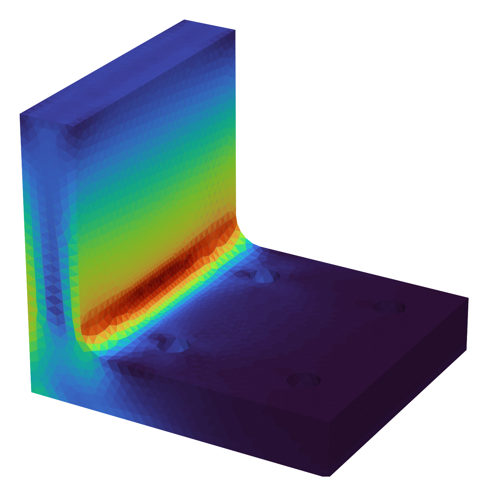
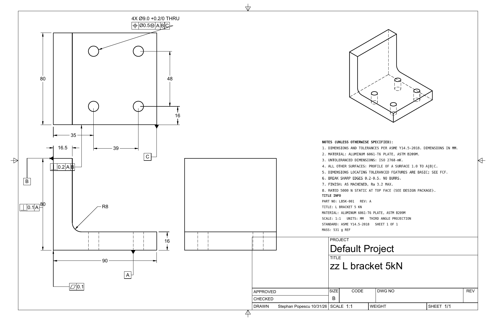

Design automation
One brief in, a validated part out.
The intent: cut the slow hand-offs between sizing, CAD, FEA, DFM, drawings, and cost. A short brief becomes a part I can quote and make, with a human gate where judgment matters.


The steps
- Brief. Function, quantity, process, material, and targets for cost, volume, and mass.
- Hand sizing. First-principles math before any CAD.
- CAD. Parametric, fully constrained model in Fusion.
- FEA. Stress check against the load case.
- DFM + DFA. Two reviews run in parallel and merge into one change list.
- Human gate. I approve or change the list. Then one CAD revision and one FEA re-run.
- GD&T + stack-up, then an ASME Y14.5 drawing, a BOM, and a sourced cost plan.